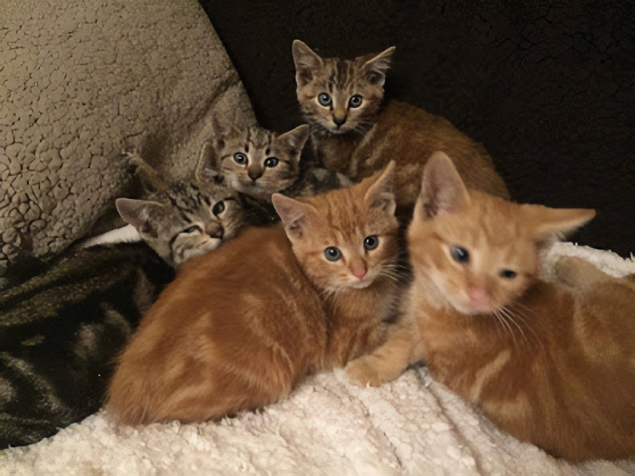

Donate

Every local RSPCA branch is a separate charity, so the RSPCA Cambridge does not receive automatic funding. We have a 10-point plan to ensure that we keep full services running and to do this we need to raise £100,000 per year.
See below for some ways you can donate. There are also plenty of opportunities for volunteering in Cambridge and nearby if you would rather give your time.
Donate items or cash
- £10 could pay for antibiotic treatment for a sick kitten.
- £50 could support a clinic session for 20 pets.
- £100 could sponsor a kennel space for a dog or cat.
We rely very heavily on donations both of money and items that we can sell in any of the three RSPCA charity shops in the Cambridge area.
If you are a UK taxpayer, please Gift Aid your monetary donation. This means that for every £1 you donate, the RSPCA Cambridge receives an extra 25p. For more information on Gift Aid see the HMRC website.
Online
You can donate to us online using our secure JustGiving form. Please remember to tick the Gift Aid box if you are a UK taxpayer.
JustGiving has also a convenient way to set up a fundraising page if you are considering doing a sponsored event to raise money for us.
Postal or walk-in
Print out our Gift Aid declaration form and send it together with your cheque, or hand it in to any of our shops.
Donations of saleable items can be dropped off during opening hours at any of the charity shops. You can also Gift Aid these donations so that we can reclaim the tax.
Other ways to donate
At no additional cost to you, you can give money to the RSPCA Cambridge & District simply through everyday online spending.
Just download Give as you Live and shop normally online. Every time you make a purchase at thousands of stores including Tesco, Boots, John Lewis, Sainsbury’s, Amazon, play.com and many more, those companies will donate some money to us.
It’s easy, free and every penny really does count.
Sponsor a dog or cat in kennels

One of our biggest expenses is the cost of boarding animals until they can be rehomed. At present we sadly have to turn away many people who can no longer manage to keep their pets because we simply do not have the funds to take them in. It is very likely that many of the owners we cannot help but decide to have their animals put to sleep.
This is something we really want to avoid and you can help by sponsoring a kennel space. A donation of just £6 will cover the costs of one unit for one day.
Sponsoring kennel spaces means that we can admit more animals and provide more veterinary care.
Legacies
Leaving us a legacy in your will is another way that you can help. To ensure that this legacy is spent locally you need to specify that it should go to the Cambridge & District RSPCA Branch, registered charity number 205098. This charity number is unique, so is the best way of identifying us as a beneficiary.
Legacies to RSPCA branches are normally handled via the Legacy department of the national RSPCA, who have the expertise to deal with issues involved in handling the administration of an estate. If you direct your executors to forward your legacy to them at RSPCA, Legacy Team, Wilberforce Way, Southwater, Horsham, West Sussex RH13 9RS, they will arrange for the funds to be transferred to the Cambridge & District branch.
If you wish the RSPCA to act as your executor and administer your estate, this can also be arranged. Please look through the national website details about naming the RSPCA as your executor.